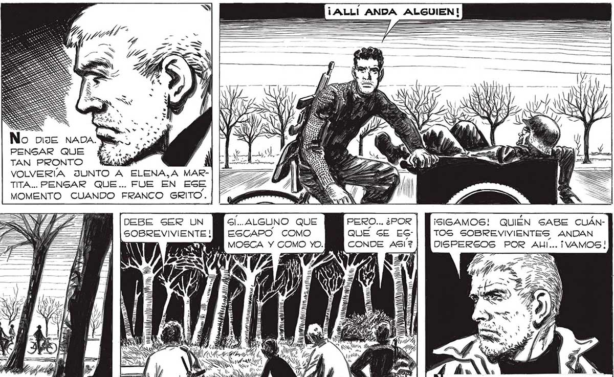
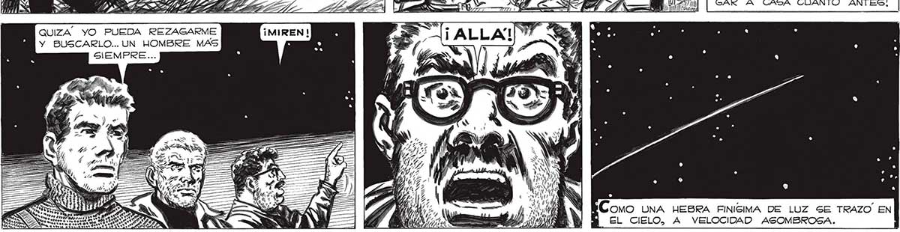

294 ALEGRATE, JUAN... AHORA PODREMOG IR EN AUTO..HABRA' POCOS [MM ESCOMBROS... UNOS MINUTOS = MAS Ss No nue napa. PENSAR QUE ¿e TAN PRONTO e VOLVERÍA JUNTO A ELENA,A MARTITA... PENSAR QUE... FUE EN ESE MOMENTO CUANDO FRANCO GRITO. DEBE SER UN PM sl.. ALGUNO QUE PERO... ¿POR | isiGAMOS! QUIÉN SABE CUÁNSOBREVIVIENTE ! ESCAPO COMO QUÉ GE EG-| TOS SOBREVIVIENTES ANDAN | ? MOSCA Y COMO yO. BN CONDE A5I? | OISPERSOS POR ALI... ¡VAMOS! ” - r Fi pz ; : L/ | Ls =S — Nica niós : ¿JE > O as AA bs ADA 4 Ja8US 4) ) NT Ae Y da A y all Y pa >) Ni SA SS a NS 177 ; V= (Ec | O TUVE REPAROS EN MOSHAZ <Q VI ca A O pa? NAC, Ñ Mi | TRARME EGOÍSTA.¡QUERIA LLESY ONDNAIEOSSIANMAR E HA tic o Y ZA ¡E GAR A CASA CUANTO ANTES! NN O , 239 s [ao] QUIZA” YO PUEDA REZAGARME Y BUSCARLO... UN HOMBRE MAS , 4 hz 1% ñ ' e % % , / BC omo UNA HEBRA FINISIMA DE LUZ SE TRAZO EN “y EL CIELO, A VELOCIDAD ASOMBROSA.

